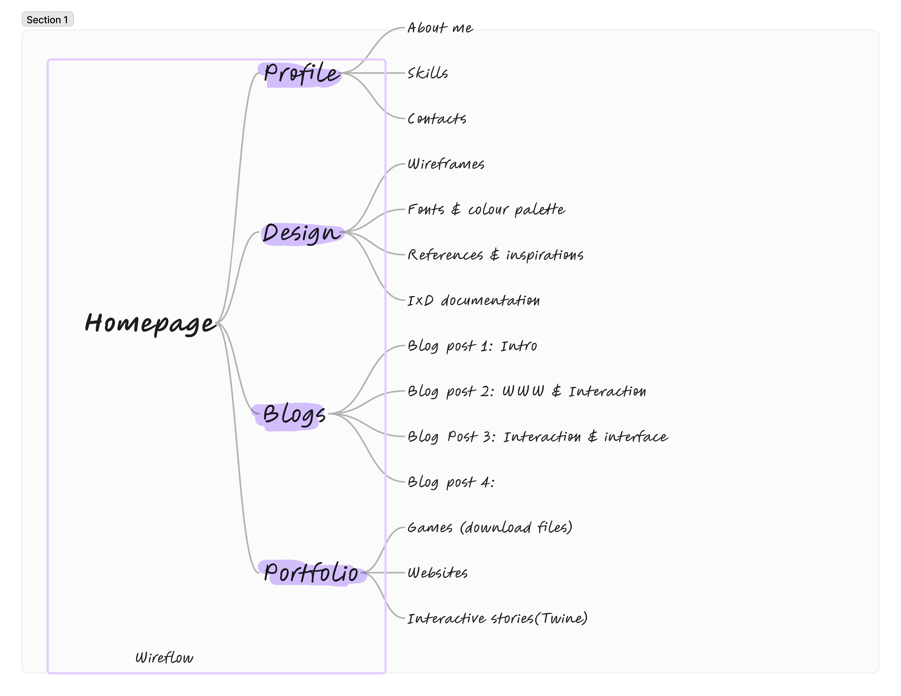

The task is to create a portfolio website. I wanted to focus on things I find interesting and display the skills I have through my work. I have decided to focus on my expertise in UI/UX for the portfolio website. I want to focus on this aspect on this aspect of general website development because the UI/UX aspect of it is what interests me- and I love constantly doing research on ways to make digital, interactive media look great while also being functional while exploring the psychology behind it. I seem to have a decent amount of knowledge and skill to showcase what I can do and what I have done while also implementing the knowledge I have surrounding the idea.
For the starting phase, I want to focus on the content I would like to present on my website and how I want the look of the website to be before focusing on the functionality, but in a few cases I think about how it will work before working with the aesthetic and look. Knowing how I want something to look always assists me in eventually figuring out how I would like something to behave and coming up with new creative ways of functionality, in turn knowing how something works helps me figure out ways to match the functionality with the aesthetic/ improve the look. I like to use platforms such as Figma to group and put my ideas into visuals to help me declutter the ideas in my head, I started working on the wireflow:
This helps me establish the general flow of the website and helps me see it as a visual. I then moved on to working on my wireframes and generally creating simple designs that most websites as a skeleton to just test out the wireflow in practice before adjusting and improving to these wireframes. Once the basic designs had been completed, I went ahead and worked on the technical part of the project which was implementing the HTML.
I have worked in HTML before, so this wasn’t a challenge to grasp. I do however want to do further research on Semantic markup to improve my HTML code further develop good HTML coding fundamentals and enhance my skills. My first focus was setting the HTML pages and then working on the basic hyperlink navigation just to test the functionality before making additions. Once I've completed this process, I then move on to the most important part of my project which is setting goals.
I generally like to set my goals as I'm working through the project as I believe that each project has a phase that requires a person to stick to a few main project goals and adjust according to the phase. For this project, I have decided to set 3 main goals these being: A completely accessible website, implementing good coding practices improving my coding skills and also thinking of creative ways to blend my technical work into the creative aspect (thinking of clever ways to implement JS or CSS in my website).